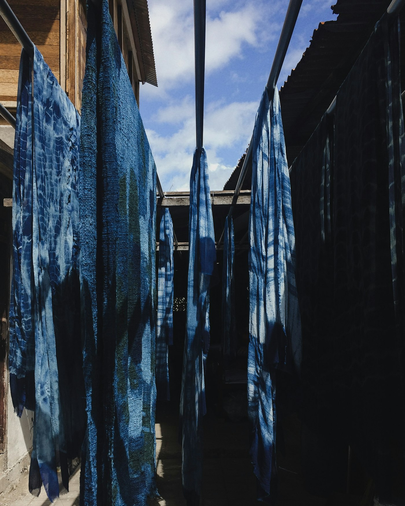
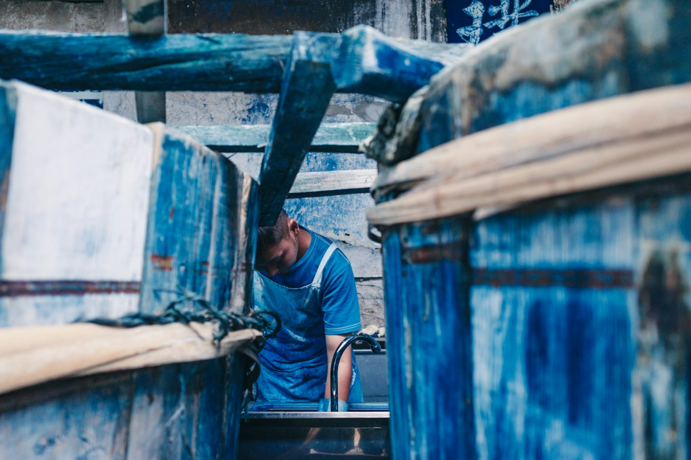

Drying dayTwenty dips
to blue.
Four pieces in one colour. Cloth goes into the vat, comes out green, turns blue in the air, and goes back in. Every piece here is a count of how many times.
Open the order bookDrop 001
The order book
Each piece is listed the way a dye house would log it: number, shade, and how many times it went into the vat.

The dye
Dip it. Air it. Again.
Indigo never arrives all at once. Cloth leaves the vat green, meets the air and turns blue, then goes back in. The deeper the shade, the more times it has been dipped.
CHÀM, the Vietnamese word for indigo, is a fictional label built around that slow colour. The clothes are imagined; the patience is real.
8 dipsMid
Take your time
Let it fade.
Indigo keeps changing after it leaves the vat. Wear it, wash it, and the blue becomes yours.
Back to the pieces